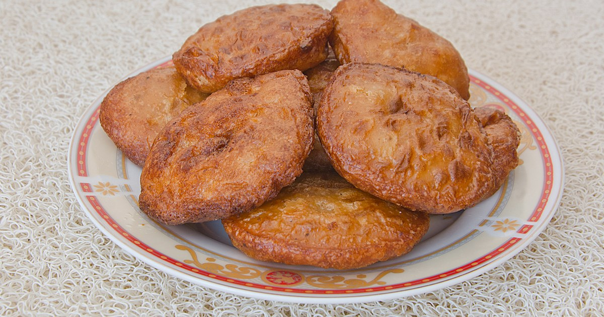
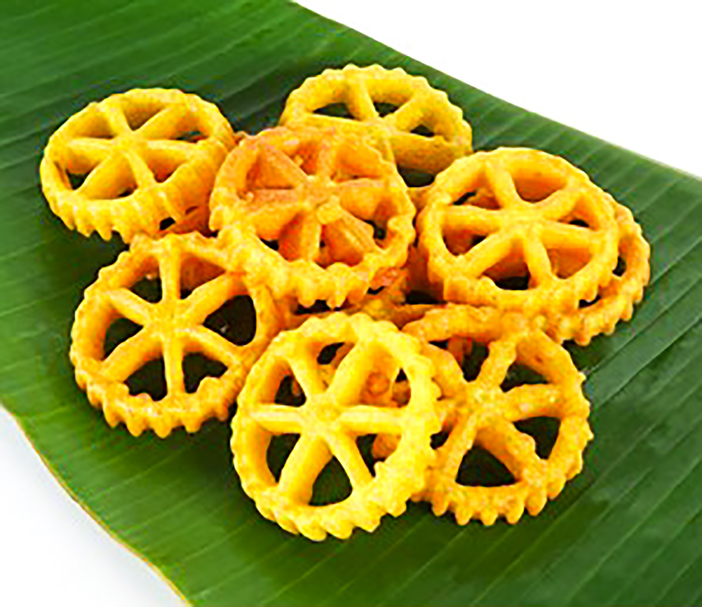
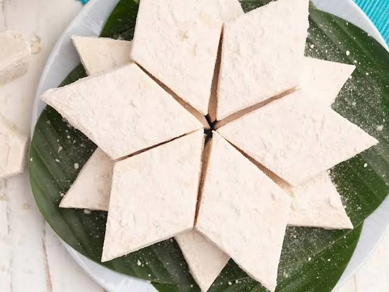
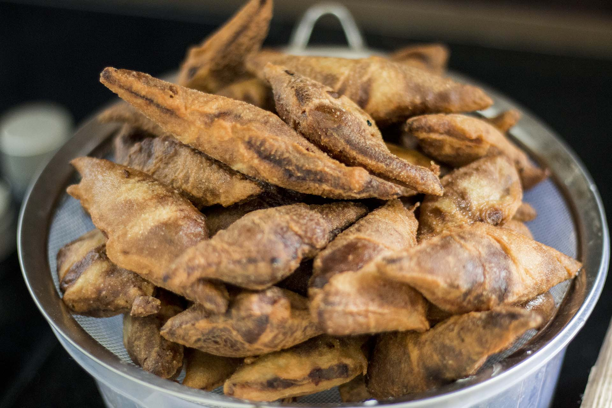

Sri Lankan Aurudu Recipes

Sri Lankan Milk Rice (Kiribath)
A traditional Sri Lankan festive dish made with rice and creamy coconut milk.
View Recipe
Sri Lankan Athirasa
A traditional Sri Lankan Avurudu sweet prepared with rice flour, sugar syrup, fennel seeds, and coconut honey.
View Recipe
Sri Lankan Kokis
A crispy traditional Sri Lankan Avurudu snack made with rice flour, coconut milk, egg, and spices. Fried into a beautiful flower shape using a special mould.
View Recipe
Sri Lankan Aluwa
A traditional Sri Lankan sweet made with roasted rice flour, sugar syrup, cashew nuts, and cardamom.
View Recipe
Sri Lankan Mung Kawum
A traditional Sri Lankan New Year sweet made with roasted green gram flour, rice flour, coconut honey, and sugar syrup.
View Recipe